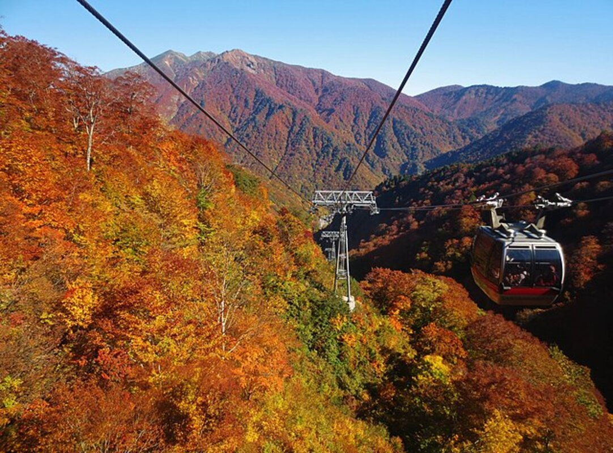
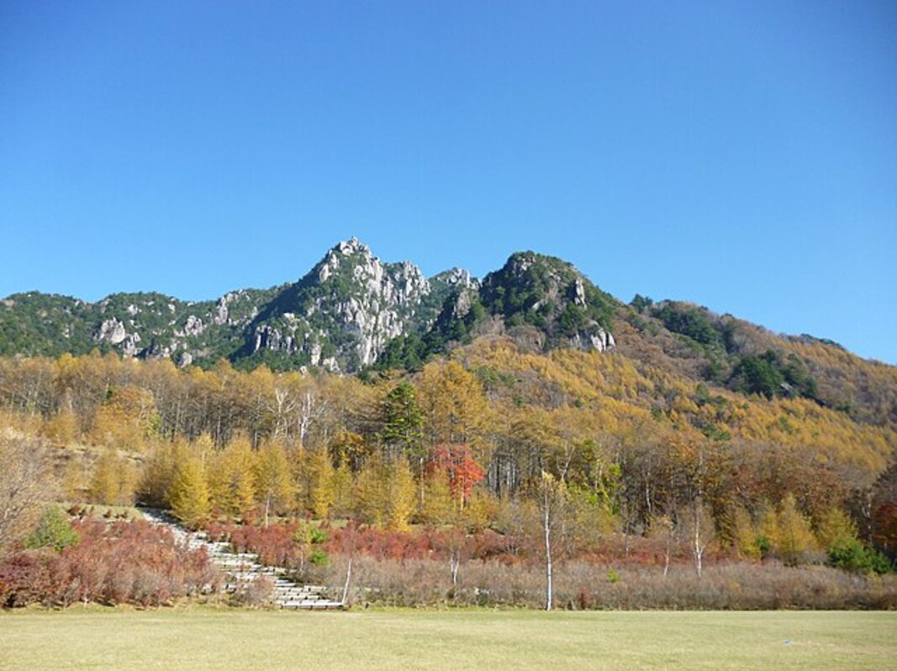
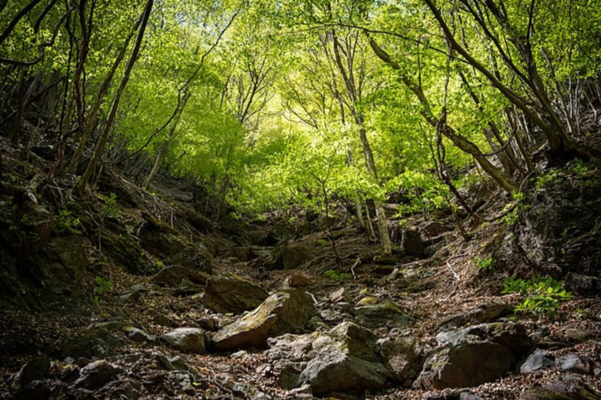
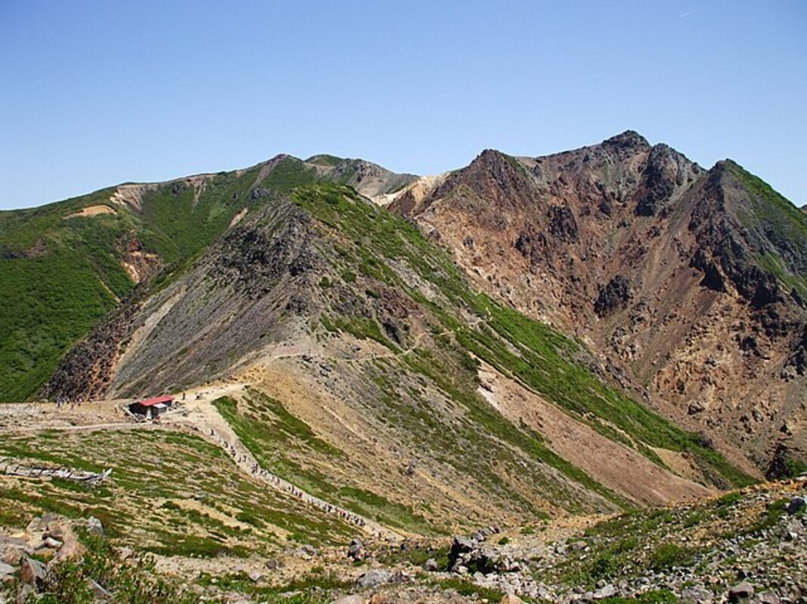
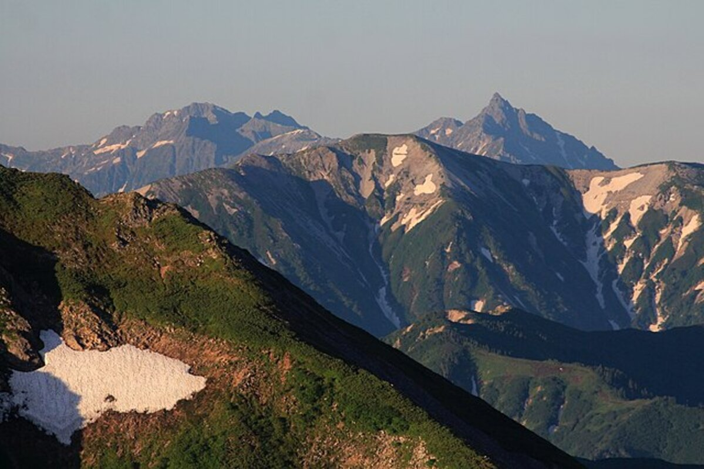

「そろそろ楽な登山じゃ物足りない」
そんな人にちょうどいいのが、コース定数30前後の山です。
本記事では、関東からアクセスしやすく、コース定数が25〜35程度の山を厳選しました。 達成感と充実した眺望が両立できる5山を紹介します。
※ルートによってコース定数は変わるため注意してください
そんな人にちょうどいいのが、コース定数30前後の山です。
本記事では、関東からアクセスしやすく、コース定数が25〜35程度の山を厳選しました。 達成感と充実した眺望が両立できる5山を紹介します。
※ルートによってコース定数は変わるため注意してください
⏱ コース定数30の目安
一般的に5〜7時間程度の行動時間。早出・早着を心がけ、余裕を持った計画を立てましょう。
一般的に5〜7時間程度の行動時間。早出・早着を心がけ、余裕を持った計画を立てましょう。
おすすめ5山
① 谷川岳
群馬県・標高1,977m

🚗 車新宿から約2時間30分
🚃 電車新宿から電車約2時間30分
コース定数コース定数30（土合口徒歩往復）
コース例土合口〜谷川岳往復コース
📍 YAMAPでコースを見る →
📍 YAMAPでコースを見る →
特徴「魔の山」とも呼ばれる双耳峰。ロープウェイを使う天神尾根ルートならコース定数20前後まで抑えられ、健脚度に合わせてルートを選べます。
👍 おすすめ理由：変化に富んだ山容と稜線からの眺望が絶品。歩き応えを求めるなら土合口徒歩往復（定数30）、体力を抑えたいなら天神尾根ルート（定数20前後）がおすすめです。
谷川岳の詳細情報を見る →
② 瑞牆山
山梨県・標高2,230m

🚗 車新宿から約2時間15分
コース定数コース定数25
コース例瑞牆山荘バス停〜瑞牆山 周回コース
📍 YAMAPでコースを見る →
📍 YAMAPでコースを見る →
特徴花崗岩の奇岩・巨石が林立する個性的な山容。日本百名山のひとつで、迫力ある岩峰が連なる光景は他の山では味わえません。瑞牆山荘を起点に富士見平小屋を経由するルートが一般的。
👍 おすすめ理由：コース定数25〜35前後のルートで岩場歩きと高山の雰囲気を同時に楽しめる山です。標高2,230mながら新宿から車で約2時間15分とアクセスも良好。岩を楽しみたい中級者に特におすすめです。
瑞牆山の詳細情報を見る →
③ 両神山
埼玉県・標高1,723m

🚗 車新宿から約2時間5分
コース定数コース定数26
コース例上落合橋登山口〜八丁尾根〜両神山 往復コース
📍 YAMAPでコースを見る →
📍 YAMAPでコースを見る →
特徴鋸状の山容が特徴的な秩父の名山。日向大谷ルートは鎖場があり、スリリングな登山体験ができます。
👍 おすすめ理由：アクセスの良い埼玉県内でありながら、本格的な岩場登山が楽しめます。稜線からの展望も素晴らしく、達成感の高い一山です。
両神山の詳細情報を見る →
④ 那須岳
栃木県・標高1,915m

🚗 車新宿から約3時間30分
🚃 電車新宿から電車約3時間30分
コース定数コース定数35
コース例峠の茶屋登山口〜茶臼岳〜熊見曽根 周回コース
📍 YAMAPでコースを見る →
📍 YAMAPでコースを見る →
特徴活火山・茶臼岳を中心とした那須連山。ロープウェイを使えば短時間で山頂エリアへアクセス可能です。
👍 おすすめ理由：変化に富んだ火山地形と紅葉が美しい。縦走コースを選べばコース定数30前後に調整できます。
那須岳の詳細情報を見る →
⑤ 武尊山
群馬県・標高2,158m

🚗 車新宿から約3時間5分
コース定数コース定数30
コース例武尊神社〜武尊山〜剣ヶ峰山 周回コース
📍 YAMAPでコースを見る →
📍 YAMAPでコースを見る →
特徴関東以北最高峰のひとつ。上州武尊山とも呼ばれ、百名山に名を連ねる名峰です。
👍 おすすめ理由：尾瀬方面に向かう途中でアクセスできます。雄大な山容と草原状の稜線が魅力。体力をしっかり使いたい方に最適な山です。
武尊山の詳細情報を見る →
まとめ：自分の体力に合った山選びが登山を楽しくする
コース定数30前後の山は、達成感と安全性のバランスが優れています。ただし、体力・季節・天候によって同じ山でも難易度は変わります。詳細な条件で山を絞り込みたい方は、以下のツールをお試しください。